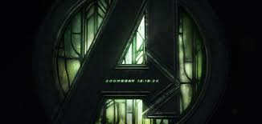

What Is Avengers: Doomsday?
Avengers: Doomsday is rumored to be one of the darkest chapters in the Marvel Cinematic Universe. It explores the collapse of realities, moral conflicts, and the cost of heroism.
Doctor Doom is expected to rise as a supreme antagonist, combining technology, magic, and multiversal knowledge. This event may permanently alter the Avengers and introduce a new era of heroes.